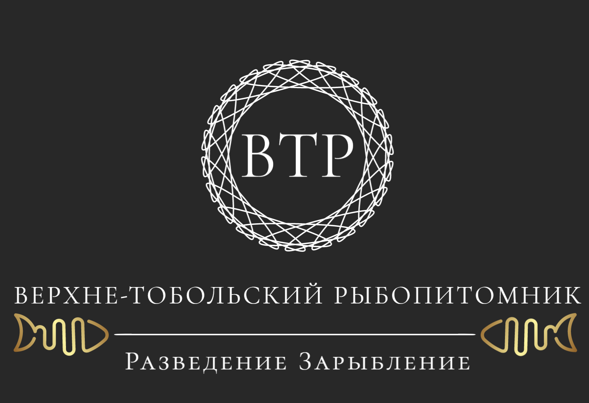

Наше предприятие, ТОО "Верхне-Тобольский рыбопитомник"
зарегистрировано в 1983 году по Центральному району города Лисаковск, БИН 080340002714, РНН 391800000386.
Фактический адрес: г. Лисаковск, ул. 4-й микрорайон, дом 41, инкубационный цех ТОО "Верхне-Тобольский рыбопитомник".
Юридический адрес: г. Лисаковск, ул. 4-й микрорайон, дом 41.
С 1983 года и по настоящее время мы занимаемся воспроизводством водных биоресурсов, имеем возможность реализации рыбопосадочного материала молоди и личинки сиговых, а также леща и щуки. В нашей собственности имеется инкубационный цех по воспроизводству личинки.
Верхне-Тобольский Рыбопимник, как специализированное предприятие Республики Казахстан, включен в перечень рыбоводных предприятий, осуществляющих мероприятия по искусственному воспроизводству водных биологических ресурсов.
Также мы занимаемся добычей рыбы на Верхне-Тобольском водохранилище.Добываем: судака, окунь, щука, плотва, лещ, карп, рипус, пелядь, сиг.
И реализуем сежемороженную рыбу.
